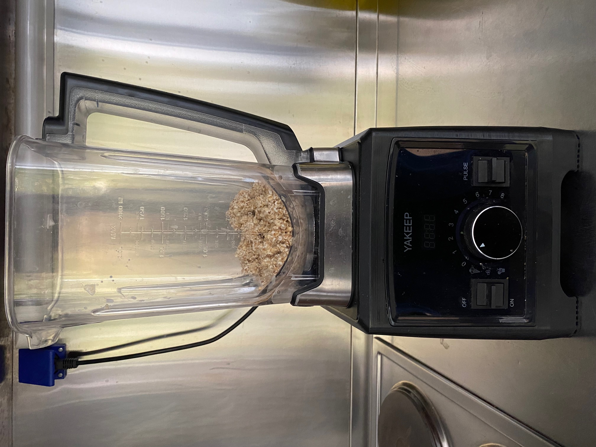

Recept za domače ovseno mleko
Sestavine
- 100g ovsenih kosmičev (lahko drobljenih)
- 1 žlica cvetličnega medu
- 1 svež datelj
- 500ml vode
Pripomočki
- Mešalnik ali "mikser"
- Filtrirna vrečka ali precizen lij
- Skleda ali lonec
- Steklenica
100g ovsenih kosmičev prelijemo s tolikšno količino vode, da so vsi potopljeni.
Mešanico pustimo čez noč v hladilniku, da se kosmiči popolnoma namočijo.

Napojene kosmiče najprej odcedimo in jih damo v mešalnik.
Dodamo jim 400ml (4dcl) vode.
Mešalnik vključimo da deluje 2 minuti pri srednji moči oziroma hitrosti.
Vsebino iz mešalnika prelijemo v filtrirno vrečko, ki je v posodi ali loncu.
S stiskanjem poskušamo izločiti vso tekočino iz vrečke.
Ostanki, ki ostanejo v vrečki so lahko uporabljeni za nadomestilo kosmičem v jogurtu.

Vso tekočino, ki smo jo izločili po želji vrnemo v mešalnik in ga poljubno ponovno zaženemo. S tem zredčimo nastalo mleko in zmanjšamo konsistenco ostankov ovesa.
Iz mešalnika lahko tekočino ponovno filtriramo ali prelijemo v stekleno steklenico.